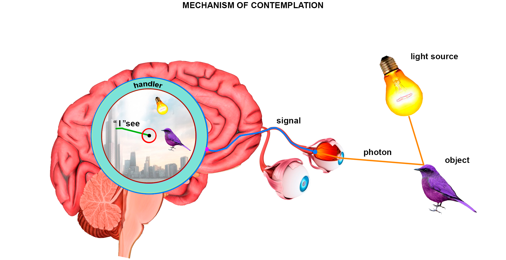

full contents of the book:
Nothing & Dot (Prolog)
Purpose
Contemplated
Entity
Consciousness
Two-Aspect (dualistic) Entity
Fourth dimension and ...
Society and Humanity
Fifth dimension and ...
Firstoccurence
Act of the “I”
The Proc.of study.the Act of "I"
The Meaning of Being
Development of Entity
The Collective Reality
the Entity Development System
Echo (Reflection)
Real Aspect of the Global I
About Worldview
Space-Time
Attitude toward Yourself
Attitude toward your body
Laziness
Fear
Hope (...for Miracle)
Adaptation
Identity of Personality
Relation [ Reason | Body ]
Free Will
Hard problem of Consciousness
Indistinguish and Identity
Matter
Gnoseology
Epistemology
Separation
to the home page
— Chapter Three —
————————————————————————————
————————————————————————————
CONTEMPLATED
Long time ago, man decided to choose for himself an Idea, which turned into a stereotype, that what is contemplated is outside. This position is simple and quite understandable. It seems to us easier to explain – why they decided this way and not otherwise. Some researchers in this audience are convinced of the correctness of the materialistic (physical) model of the World, and the other part, on the contrary, have ‘certain’ idealistic ideas. In any case, there are many contradictory positions, which have no evidence, brought to the ‘status of indisputable truth’ by authoritative, but unsubstantiated statements based on subjective choice. This concerns the most important, fundamental questions. We propose to understand together, in the process of research;
Compared to hearing, taste, smell, touch – vision is the most informative instrument of ‘Reality Perception’. Technically, the principle of operation of all sense organs is the same: impact on receptors (i.e. data receipt) -> signal to the brain -> signal processing, i.e. Interpretation* and Perception of the result; Obviously, the effectiveness of visual perception significantly exceeds the sense of smell, for example. We do not smell the subtle scent of objects at a great distance, we cannot distinguish more than ten smells at the same time, but we see much further than we smell - widely and high, with the transmission of colors and the dynamics of thousands of objects in this grandiose picture of the frame of reality, so we think it is rational to begin the study with questions:
How does the mechanism of contemplation work?
How does it happen?
We will not study the obvious, therefore we propose to immediately accept it as an axiom: We see all objects according to one principle. That is, stars, sky, trees, and own body – all visible objects are contemplated by us technically in the same way, by means of one instrument – “vision”; We suggest that we first discuss the terms needed here – clarify and accept their brief meanings:
Reason - is an individual instrument of the “I”, which ensures work with data and experience, analysis, and conclusions. The importance of reason cannot be overestimated in any way – without the use of reason, the “Act of self-certainty of the “I”” will be absolutely impossible, since it requires analysis (I think) and conclusions (Therefore, I exist). Reason does not make decisions, this instrument cannot be considered independently active. We will discuss this later;
Obviously, it follows from this that the “I” itself, without reason, is an unconscious wave function, but – and in that case, we would not be aware of vital activity and the manifestation of the ability to express will;
Besides this, the question arises: In relation to What? Firstly (and in any case), the necessity of the basic relativity of being is determined itself, i.e. in general – to the static, passive opposite, in relation (comparison), or in direct integration, with which the “I” has the opportunity to manifest the activity inherent to “It”. Let’s say – “Consciousness”. Secondly, we have a self-evident conclusion about the multiplicity of various “other I’s?”, which (from the position of each) are not my “I”, i.e. those others who are “Not I”. We will also discuss questions concerning this later;
Mind - is a developing means of Reason and a set of methods - individual methods of using the capabilities of the mind, building special thinking functions using experience (including sensory and mental) and logical conclusions. The mind itself does not decide anything - any decisions are made by the "I" (literally "From Above"), however, the Mind controls the category of criteria, operates with properties and methods. Here is an example of choice: multiply one hundred by three, or - to three, 99 times add three. You can have hundreds of separate methods and techniques, or combine them into one very effective tool - "Mind";
Intelligence - is the property of special living beings to develop rationally and effectively, through the use of reason and the application of the mind. Intelligence, beings are capable of expressing desire, showing will and intention, thinking and studying, creating, creating, loving and rejoicing, having culture – speaking, dancing, singing, joking… ‘Capable within the Universe’, have a potentially infinite number of conceivable and inconceivable properties. However, depending on the level of development, or even mental state, they can have a number of special characteristics, among which (let's smile): they, for some “appropriate reason”, or for no reason at all :), can be sociable, hospitable and friendly, and on the contrary - aggressive, insidious and very dangerous, or is this subjective and “we think so because we ourselves are like that”?
* * *
Among people (and not only ;), there is a statement that ‘the brain sees surrounding objects’. However, it is clear to us that there is only one most important Element that states all the results, which feels directly, and ‘sees in fact’ – in the final instance, and as a result of all systemic iterations (of reason). The Main Element! – endowed with Life, desiring, manifesting intention, feeling, recognizing the process as completed. It is precisely this Element that is That which we call “I” – it is precisely That which we consider “Ourselves” – in all cases when we say “I”, whether to ourselves or to someone else, and also when we think: “I” – meaning by this “Myself”, in the direct sense, and in Our Person;
Treat repetitions with understanding - it is necessary to convey the meaning to Yourself first of all, and then, equally correctly to everyone - capable of understanding, realizing, and never confusing the “I”, that is, “Yourself”, with your own body, which is an important “thing”, this is of course, but it is precisely the representation of a specific “I” in the conditions of reality (and in the appropriate form), for the possibility of participating in situations (and gaining experience);
* * *
So, continue the research:
Let us consider the mechanism of current contemplation, that is, at the present moment in time, as at any moment, but right now; It should be noted that we do not consider mental visions, in a dream, in delirium, under hypnosis, since the mechanism of contemplation is fundamentally the same, if we often confuse the vision of active reality in those states | with obvious factual reality;
We will base our reasoning on the most popular, materialistic position – this will be accessible and understandable for most people [this is here and now]:
1. Photons emitted by any light source are reflected from the object and affect the retinal cell of the eye;
2. A retinal cell initiates an electrical signal to the brain;
3. The signal is processed by using a handler (our Reason);
4. “I” contemplate the object as a result of processing. We say – “I see” – this is the moment of current contemplation;
The content of the contemplated result of processing must be interpreted - taking into account the existing experience of the "I". We see before we understand - "What exactly do we see?" Then what we know very well happens - these are internal processes: comparisons, thinking, analysis, mental, and others - they are performed by means of Reason. Any experience, as a subjective conclusion of the "I", is also formed by Reason. The situation is remembered as a whole, stored in memory as information, not being an experience;
The experience that is extracted is only new { relationships, knowledge, objects, feelings, sensations, emotions, forms, thoughts, thought forms, situations, situation patterns };
That is, it can be argued that any situation is only a potential experience, just as it can be argued that there are no “empty details” that do not contain any meaning, and from each of them, with due attention and analysis, one can extract experience, be it any object (also its dynamics and changes), or part of the situation, or the situation as a whole;
The moment of realization* of reality always corresponds to the point of concentration – this is the point of current attention. The quality of realization at this point is the highest – interpretation provides the necessary conditions for precise qualification, clarity of understanding, detailing of properties and forms from those available in experience, corresponding to individual capabilities, and namely: ‘Potential of Reason’, which uses unique methods and functions, that is, subjective, and subject to special psychic relationships and influences of the superstructure. It should be noted that the quality of other, lateral objects is lower than at the point of concentration. On the periphery, what is contemplated is significantly blurred, the clarity of the boundaries of objects is almost absent, they seem to float, compared to the clarity and specificity at the point of concentration. The colors of objects on the periphery are distorted to approximate, with shades of gray. The quality of interpretation? of peripheral objects, their situational meanings, as well as the general semantic content, is inferior to those in the center of attention. The general picture of contemplation is that the Content of the so-called “Frame of Reality” looks like a aureole, with highest quality in the center and a gradual decrease as you move away from the center to the sides (Resembling a “pipe”, which is very important – it is necessary to keep this oddity in mind);
The mechanism and processes of contemplating separate objects work asynchronously - for example, if three or four different objects suddenly appear in our field of vision at the same time, then their precise and detailed interpretation, and then ‘identification’ occurs sequentially, and so on - when the point of concentration moves. However, objects not located at the point of concentration will be interpreted simultaneously, albeit preliminary and roughly, but this happens quickly, in parallel and asynchronously. For some time, albeit a very short time, we unable to establish ‘what kind of objects these are?’;
The time required to establish clarity is different for each object. Depending on the content - some objects are interpreted almost instantly, while others literally manifest themselves, slowly filling with essence, definition, the necessary semantic clarity;
Also, “forgotten” objects are interpreted slowly, which are realized, i.e. contemplated and required for use very rarely, or extremely changed to the level of “difficult to recognize.” For example, it is difficult to identify a person whom you have not met for 30-40 years or more, and then encountered him “face to face”;
*Realization – as a still moment, implies a “frame of reality” (similar to a screenshot from a monitor screen), that is, a recorded situation, in the form of a contemplated picture. But, the realization observed “in the process” - is literally a phenomenon reflecting the transformation of existing experience into new experience. If we look at the process from the "Global Position", then this happens only for the purpose of developing the "Entity" by acquiring new experience - mental, psychic, or any other, but necessarily new, and more rational and effective. The situations being realized are multi-component, but do not contain useless details. By analyzing each object and any situation, one can endlessly extract new experience;
Let us also take into account that with a lack of light, the quality of the situation (reality frame) is reduced and, in complete darkness, the image disappears completely. With eyes closed, being in the dark, a person does not see anything with the naked eye, i.e. in a normal state. Interpretation of objects, in low light, will be slow as with a lack of data, or with a limitation of the ‘channel width’. In late twilight, the time for recognizing objects increases, and we often encounter this incident: ‘look closer’ :);
To have a complete picture it is necessary to study in detail the mechanism of contemplation. The eye is an instrument similar to an optical device with "sensor cells" capable of responding to photons, but are they external?

fig. 1
The cone cells of the eye, ‘when exposed to photons’, send corresponding electrical signals to the brain. Then, the signals are processed and the result of the processing is realized in a real picture, and simultaneously contemplated, after which we say “I” see. Focusing our vision on the point of concentration - “I” clearly see a specific object, and vaguely see the rest, the surrounding;
This is important: Pay special attention to the moment of impact of photons on the eye cell - at this moment photons cross the boundary of the body, and then everything that happens is implied by internal processes (first and initially we think like this: signals do not fly back, everything happens inside). The body is realized in the idea of “I Am – here, and this is how I look.” Look in the mirror – this is how you realize yourself, or to be more precise – “I” realizes itself in accordance with the existing experience. After crossing the body boundary, through the eyes and cone cells, the signals enter the brain, where they are processed and the “I” sees what is being contemplated. That is, it is You who now see what you previously considered independent of Consciousness*, and namely – external. Look around and look around – this is what is being contemplated now. This moment is extremely important in our research. Concentrate and analyze how this transition “inside the Self” occurs (and, does it occur?);
For a sure understanding, try again and again to recognize This “I” in reasoning – “Your Own Self”. When we reason about “I”, then each one should mean “Himself”. We can especially concentrate and also assume the “I” of each person, both from our own and from his position, abstractly, perceiving the picture from the outside, being an observer;
In the structure of the mechanism of contemplation, everything is very clear and there is nothing new. Science confirms the same, and today it is an objective scheme. But, the "angle" from which this scheme must be looked at has a special significance (we will try to look at it completely differently);
*Consciousness (in this study) – has a different meaning than the usual, generally accepted in philosophy, science, and modern literature. In the process of studying, we will move together to explain this concept, for an adequate understanding of the essence;
So, we will try look at it in a completely different way – in a new way. We propose to simplify the “Contemplation Mechanism Scheme” to the limit: Photons are reflected from objects, affecting the cells of the retina. The cells initiate signals and send them to the brain. After which these signals are processed and then we state "I see". Study carefully and imagine this scheme as vividly as possible. The mechanism of contemplation is trivial and having realized it, we will be able to move to another level. Having delved into the reasoning, we will have to concentrate and be more attentive;
The signal handler (see fig. 1) irresistibly isolates and separates the elements in this reasoning:
object -> [ f-cell-e ] -> handler -> contemplated
The [ f-cell-e ] + handler (photon-cell-electron + handler) block - irresistibly and irreversibly separates external objects from internal processes, that is, we contemplate inside without the possibility of looking outside. In addition, the "handler" reliably destroys the previous format (...if it existed), converting it in some way unknown to us into what we call the contemplated - the visible, which cannot be outside;
We understand the essence of the insurmountability of systemic barriers and the irreversibility of processes, and we understand that we cannot see anything “external” directly, but how then do we “manage” to think about the external, being in conditions of complete isolation? Many researchers in this audience are absolutely sure that using the eyes, external objects are transmitted (!) to the brain by means of photons, and we see them inside, but contemplated and “physical”, they are definitely outside, ... they think exactly this way and even say that “we do not see the objects themselves” - implying their existence as independent and external (this retro-conception is very familiar to us);
Knowing the structure, this is ‘nonsense’, although the main problem is precisely that the simplest thing turns out to be extremely difficult to understand, so only methodical repetition and periodic return to this structure will help us, that is, explaining it in other (and different) words, and looking from different positions. Let us take into account that it is not only the handler that turns out to be an obstacle, but there are also other obstacles, for example photons - they act only as a carrier of information, and are not the contemplated object itself (and only for now this is exactly the case); the eye cell receives photons, but sends an electrical signal to the brain processor (handler); we especially note that - the result of processing is not contemplated, in the conscious sense;
Contemplation of images (‘things’, objects, and situations) is a psychic phenomenon inherent in the alive “Entity”;
You may substitute the term "Entity" for "Monad" or "Soul" - especially when it comes to the activity of the "I" in the conditions of reality, but we will deliberately refrain in order to avoid misinterpretations (we will soon study this concept) - do not rush to call the cup the 'Grail';
Of course, we understand very well that this is happening to us right now and, looking at the diagram, we can clearly imagine how: “I” is in a kind of spacious internal bubble, i.e. ‘I Myself’ (from the position of each of us, now), as if bathing in reality;
Here & now, all of us, being in this audience, and in these very conditions of complete isolation from the supposed “external” - are discussing the structure of the contemplation mechanism, and we say: ‘The photon wave is reflected from the object and so on’, however, we are already being and discussing in these very conditions. And again, look around, we were originally here and at the beginning of the discussion;
In the process of research we have found out that ‘we are inside Consciousness’ – we were here before. If we suddenly refuse to accept this reality – allow ourselves to deny the established fact, discarding
From all this follows the accompanying conclusion:
“Materialism is outliving itself at the systemic level” – although, this is not very useful knowledge, since perhaps we would not have found the ‘True Path’, than starting the reasoning from the materialistic position, or in other words – everything has a basis, including who we are now (there is no negative experience) and, among other things, we take into account that – “Everything Has Its Time”;
Let us also assume another – ‘reverse position’. Let us assume that initially we have such a Scheme of Nature: “We are in an isolated bubble – inside Consciousness, and have always known, and now know only about this.” Now look around, turn on awareness, then imagine everything. And? Is it reasonable to assume that the ‘World We Contemplate’ has a ‘Real Original’ located somewhere out there, outside, and even in some unknown to us, and absurd – ‘physical form’? Imagine as best you can, periodically practice imagining this device "supposed" by us. The result of this exercise may surprise you. If you are very attentive, you will soon smile from the funny - the wild Ancient Stereotype that has dominated Humanity since the Beginning of Time, and we are under Its influence;
It is known that any objects are contemplated according to the same principle. We are able not only to see, but also to identify, qualify, evaluate objects, to realize volume, color, mutual relativity, other parameters: size, distance, dynamics… Thus, we ‘understand objects as located’, in space and occupying part of the volume. In addition, we note, judging by the conclusions, the main tools: identification, qualification, and analysis, of contemplated objects and situations, are used in thought processes, and provide comparison (matching). These tools can be assumed to be separate from Reason, and quite independent, as we distinguish ‘Mind’, as a kind of mathematical co-processor, but they can also be built-in, i.e. formed, functions. This does not change anything fundamentally, does not affect anything, does not return us to the previous worldview;
Let us emphasize the possibility of developing all functions. Example: If similar but different quality objects often ‘appear’ in the field of vision, then their processing (i.e. identification and qualification), as specific experience is extracted, will be carried out, each time – faster and more accurately. This is how people learn to work on a sorting conveyor, achieve heights in this matter, and become ‘Narrow Specialists’;
We constantly use an amazing tool, and call it the ‘Interpreter’. Does it even exist?, or is it a normal function of Reason – acquired, like all the others? In discussing the mechanism of contemplation, you noticed that photons are converted by the eye cell into electrons – this is an extremely important point in the study, since objects are affected and used by conditions corresponding to the situation. So, photons cannot be processed because they are ‘objects themselves’ – the wave of data related to the Nature of ‘Consciousness and Entity’ in their fundamental relativity. We suggest you take your time, examine all in order to sturdy and know it later. Next, we need to consider the Concept of Entity;
read next chapter >> << back